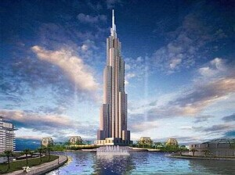
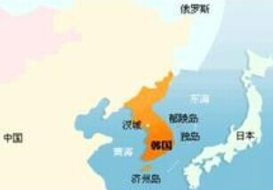

- 韩国国旗
- 韩国国徽
- 韩国标志性建筑
- 韩国地理位置
韩国概况
韩国的国名来源于古代朝鲜半岛南部的辰韩、马韩、弁韩等“三韩”部落。
人口概况
韩国总人口5008.7万(2010年1月底), 主要为朝鲜民族(即韩民族), 属蒙古人种东亚类型, 占全国总人口的99%, 是一个单一民族的国家。
韩国经济
由于受到国际金融危机沉重打击, 韩国经济受挫。2009年韩国GDP为8003亿美元, 跌至世界第15位。根据世界银行网站上公开排名, 韩国GDP位于澳大利亚(第14位)之后, 列第15位。2003年, 韩国名义GDP曾排名第11位, 距离第10位只有一步, 就是说, 在短短六年内下滑四个名次。专家对此指出, 最大的原因是韩国经济没有任何潜在增长潜力。韩国是典型的外向型经济, 出口占的比重比较大由于自然资源匮乏, 国地面积狭小, 没有什么发展潜力。最新数据显示, 国际货币基金组织预测说, 由于出口和内需均快速下滑, 2009年韩国经济将出现至少4.0%的负增长。
外交关系
以美韩联盟为基础, 开展多元外交。第二次世界大战后, 由于冷战需要, 韩国以对美、日外交为主。20世纪70年代初开始推行门户开放政策。1998年2月, 金大中就任总统后, 继续致力于巩固与美、日的同盟关系, 同时加强与中、俄的友好关系。在对朝政策上, 金大中推行“阳光政策”, 提出互不使用武力、不搞吸收统一、加强南北交流与合作的“对北三原则”, 主张以结束朝鲜半岛冷战结构的“一揽子方案”根本解决朝鲜半岛问题。韩国于1991年9月17日同朝鲜一起加入联合国。2003年2月, 卢武铉总统就任后, 强调发展韩美互惠平等关系, 促进韩中日东北亚区域合作, 同时加强同俄、东盟、欧盟等其他国家的关系, 积极参与地区和国际事务。2007年10月, 韩国总统卢武铉访问朝鲜。
贸易往来
韩国贸易额1964年首次实现1亿美元，1974年和1988年分别实现100亿美元和1000亿美元目标，2005年突破5000亿美元。截至2011年12月5日，韩国本年度累计出口5150亿美元，累计进口4850亿美元，成为全球第九个贸易额突破1万亿美元大关的国家。
截至2012年2月底，韩国外汇储备环比增加44.6亿美元至3158亿美元，创历史最高纪录。在韩国外汇储备中,国债等有价证券为2895亿美元，环比增加42.6亿美元；投资储备金为179.7亿美元，环比增加1.2亿美元；国际货币基金组织（IMF）特别提款权（SDR）为35.6亿美元，环比增加7000万美元；国际货币基金组织的储备头寸为26亿美元，环比增加2000万美元；黄金储备为21.7亿美元，环比持平。